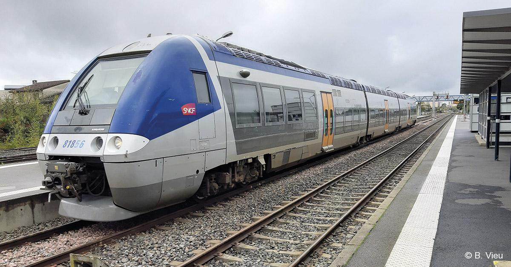
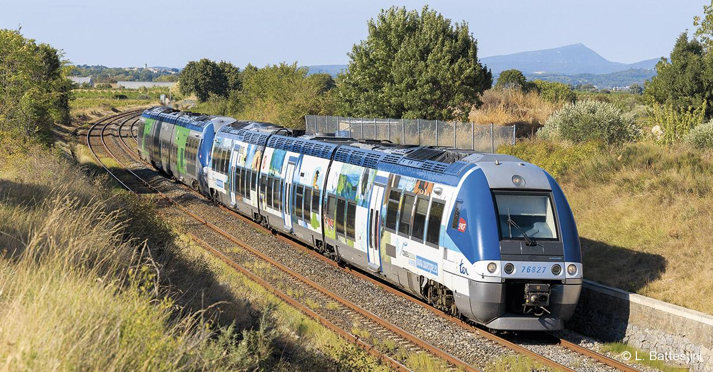
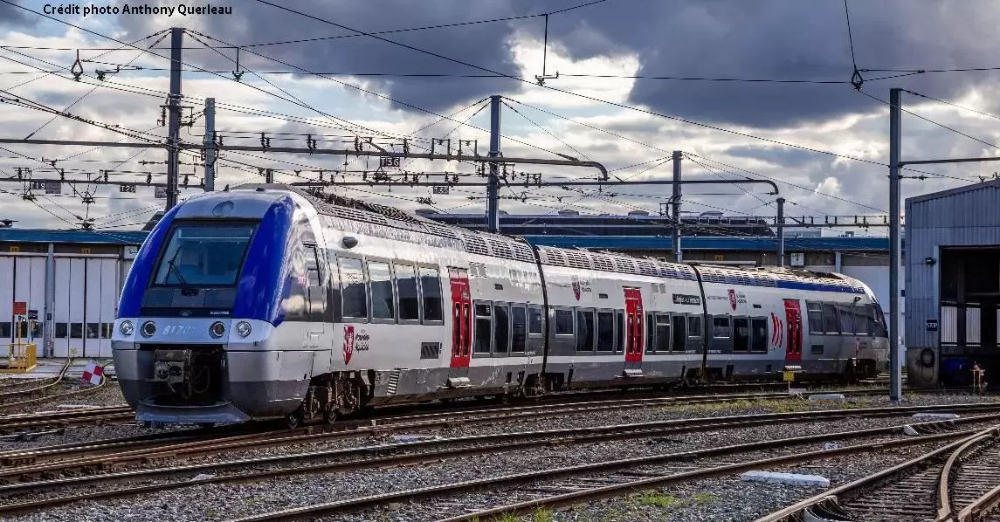

AGC



- L'automotrice grande capacité, souvent abrégé en AGC, est une famille d'éléments automoteurs articulés construits par Bombardier à Crespin4, et circulant en France. Suivant les modèles, l’AGC est à motorisation électrique, autonome, ou bimode (autonome et électrique).
- Ce matériel récent (premières mises en service en 2004) a été l’objet d’une commande de 700 unités par la SNCF (qui l’appelle automoteur à grande capacité5), mandatée par les régions. La modularité des AGC permet à chaque région de choisir le nombre de caisses (de deux à quatre en théorie, trois ou quatre en pratique) et l’aménagement intérieur (1re classe, espaces bar, porte-skis , etc.) de son matériel.
- À la suite d'un contrat signé en novembre 2010 entre Bombardier et Remarul 16 Februarie (en), l’AGC sera également construit sous licence à Cluj, en Roumanie6, en vue de fournir à l’avenir les opérateurs ferroviaires de transport de passagers en Roumanie, Bulgarie, Grèce, Croatie, Bosnie et Serbie.
- L'AGC représente dans les années 2010 le matériel ferroviaire français le plus important en effectifs7. De ce fait, avec un nombre très important d'unités, il marque le paysage ferroviaire français depuis les années 20008.